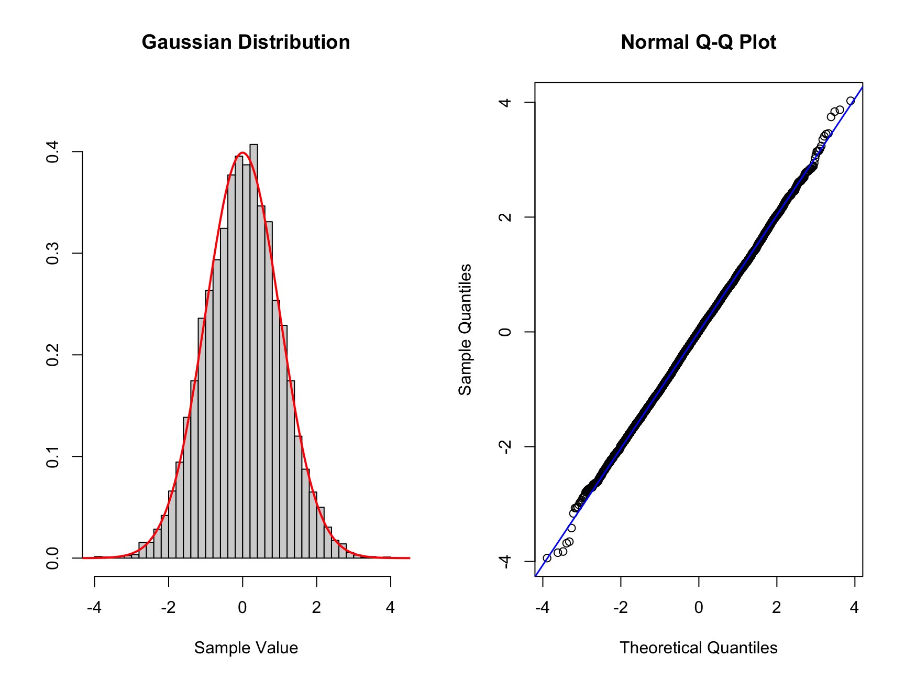

Chapter 14 Interpreting QQ Plots
The main reason we use QQ plots is to assess if our data can be from a specific distribution. Usually we will perform this test to check for normality. This can be important if we perform a statistical test that makes the normality assumption. Since it is only a visual test it is subjective.
In QQ plot we are putting our data in quantiles and answering the questions: how similar are these sample quantiles to the theoretical values from a probability distribution. We put each data point we observe into its own quantile and compare them to a theoretical probability distribution.
Obviously, because we are looking at subjective visual comparison it is important to understand what these comparisons mean. To do that we will first create a few functions to make it easier to go from random sample to plot.
# function to plot histogram and distribution for comparison
hist_comp <- function(x, n_breaks = 30, title, xs, norm_dens) {
hist(x, breaks = n_breaks, xlab = "Sample Value", ylab = "",
freq = FALSE, main = title, ylim = c(0, 0.45))
lines(xs, norm_dens, type = "l", col = "red", lwd = 2)
}
# function to create QQ scatter plot and reference line
qq_comp <- function(gaussian_rv) {
qqnorm(gaussian_rv)
qqline(gaussian_rv, col = "blue", lwd = 1.5)
}14.1 Standard Normal
Now we can start comparing, we will start with the simplest comparison. Here we will sample from a normal distribution with \(\operatorname{N}(\mu = 0, \sigma^2 = 1)\).
# Create two plots next to each other one row and two columns
par(mfrow = c(1, 2))
# Sample data
n <- 10000
set.seed(1234324) # choosing reproducible seed for random number
data_sample <- rnorm(n)
# normal density
# xs are x-values for the distribution
xs <- seq(-5, 5, 0.01)
norm_dens <- dnorm(xs)
hist_comp(data_sample, title = "Gaussian Distribution",
xs = xs, norm_dens = norm_dens)
qq_comp(data_sample)
Here we can see on the left the theoretical Gaussian distribution as the read curve. The histogram shows the sample with n = 10000. The same data is represented on the right which is a QQ plot. The normal distribution is along the diagonal blue line. We can see that this data lies mostly along the diagonal so matches the standard normal. There is some minor deviation on the edges of the distribution. Here there are minor deviation on the tails but only a handful of points out of the large sample.
14.2 Skewed data
Now we will look at data that is skewed in either directions, which we can see on the histogram and what that looks like on the QQ plot. We will make use of filtering the vector of data using the square brackets. If we have a vector vec_a we can subset (or filter) all values smaller than zero by using vec_b <- vec_a[vec_a < 0]. This new vector vec_b contains all entires in vec_a that are smaller than 0.
# Skewed left more samples to the left of standard normal
# To create this data we will add more samples to the left of the mean
# artificially using the same data as above
set.seed(1234234) #set a random seed
# we create a vector which contains the new data
new_skew_left <- data_sample[data_sample < 0] * 2
nor_skew_left <- c(new_skew_left, data_sample)
# Create new plots
par(mfrow = c(1, 2))
hist_comp(nor_skew_left, title = "Skewed Left", xs = xs,
norm_dens = norm_dens)
qq_comp(nor_skew_left)
If the data is left skewed as in this case, you can see that the histogram is shifted to the left compared to the standard normal distribution. You can see a proportion of the data on the left tail of the distribution. Now looking at the corresponding QQ plot we can see the first two quantiles are blow the theoretical (diagonal) line. The points above 0 are close to the diagonal but below 0 the points deviate from the diagonal. If you see such a QQ plot, the interpretation is that the data is left skewed.
Q. Now try to create data skewed to the right and interpret the plots you create.
Only expand once you have made an attempt!
# Skewed right more samples to the right of standard normal
# To create this data we will add more samples to the right of the mean
# artificially using the same data as above
set.seed(1234234) #set a random seed
# we create a vector which contains the new data
new_skew_right <- data_sample[data_sample > 0] * 2
nor_skew_right <- c(new_skew_right, data_sample)
# Create new plots
par(mfrow = c(1, 2))
hist_comp(nor_skew_right, title = "Skewed Right", xs = xs,
norm_dens = norm_dens)
qq_comp(nor_skew_right)
14.3 Symmetric Tails
We can also have tails which are symmetric on both sides. We distinguish between fat tailed and thin tailed distributions. We will again create such data and look at how we can identify them in a QQ plot. We wills tart with at fat tailed example.
# To create fat tailed data
nor_fat <- c(data_sample * 3, data_sample)
# Create plot
par(mfrow = c(1, 2))
hist_comp(nor_fat, title = "Fat Tails", xs = xs, norm_dens = norm_dens)
qq_comp(nor_fat)
Here we can see the histogram there is more data located both to the right and left of the standard normal distribution drawn as a red line. When we look at the QQ plot we see that the first quantiles are smaller than the corresponding theoretical values. For larger quantiles the values are larger than the theoretical values.
We can now look at thin tailed, the easiest way to simulate this is by using a normal distribution with variance smaller than 1.
# Create thin tailed data
set.seed(1112) # set a random seed
# we simulate new data with n as before but different variance
norm_thin <- rnorm(n, sd = 0.5)
# Create plots
par(mfrow = c(1, 2))
hist_comp(norm_thin, title = "Skewed Right", xs = xs,
norm_dens = norm_dens)
qq_comp(norm_thin)
Here we can see that the histogram of the data indicating a distribution narrower than the standard normal distribution. Here it is a little tricker to see in the QQ plot but you should notice that the initial quartiles have values higher than the diagonal and the last quantiles have values smaller than the diagonal. This is the opposite behavior compared to the fat tailed distribution.